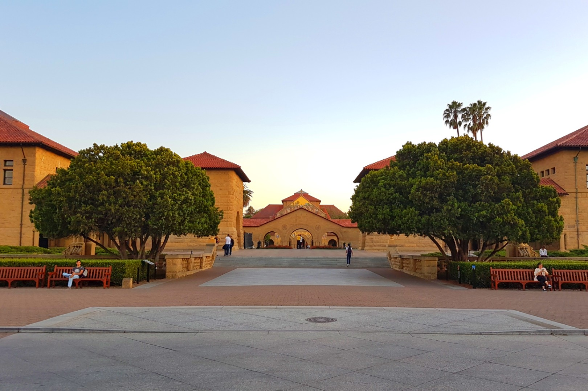

Background
I am a consultant at McKinsey & Company, with an academic background in management science, physics and operations research. Previously, I worked for four years in data science and analytics, including at a legal tech startup and as a data science consultant. I have a deep technical background (in math, data and programming), consulting skills (in communication, problem-solving, commercial acumen and teamwork), and a passion to do well in everything I do.Career Goals
I seek to contribute to the development of industries across high-impact problems, through advances in tools such as strategic thinking and operations research. I am fascinated by the science of decision making, especially in dynamic contexts, and seek to apply operations research, strategy and data science toward industrial-scale applications. I am particularly interested in the tech, airline, logistics, supply chain and transportation industries because of their complex processes, potential for improvement and societal impact.